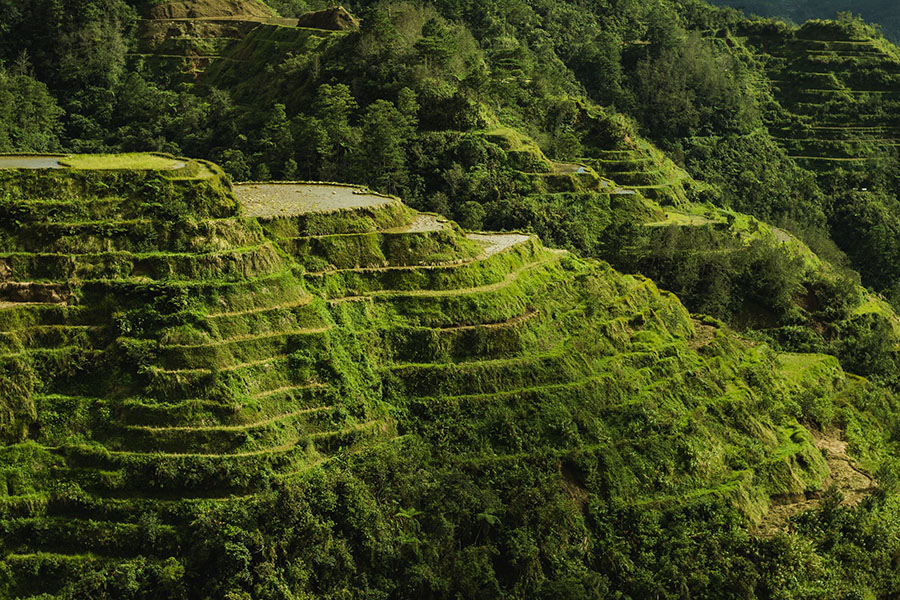
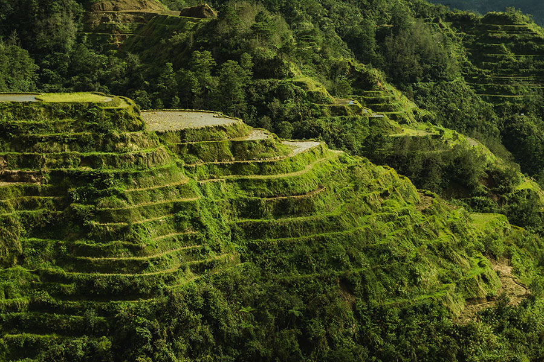

About the Philippines
The Philippines is a country full of rich history and culture, but that is only the surface when it
comes to the country, and has many more to offer to anyone willing to visit.
According to
Britannica, located in the western Pacific Ocean, the Philippines is an archipelago made up of
several thousand islands and islets, reaching around at least 7,000. With all of these islands,
there is sure to be an abundance of natural beauty that the country offers.
According to Nations
Online, the Philippines is known for many natural locations, such as with the Banaue Rice Terraces,
Chocolate Hills located in the Bohol Province, White Beach in Boracay, Taal Volcano, Mount Mayon,
Coron Island, and the Tubbataha Reefs Natural Park. Having a variety of stunning views, those who
want to visit have many options of enjoying their stay in the country.
Focusing more on the country itself, it may seem like a small land mass, but according to Britannica,
as of 2021 the country has an estimated population of 111,090,000 people. With that many people, the
country is ranked the 13th most populous country in the world.
The Philippines is a major
exporter of electronic equipment, garments and accessories, coconuts and coconut products, and
minerals such as copper, gold, and iron ore. Those various resources are transported to countries
like Japan, United States, Hong Kong, China, South Korea, and many others. According to the UNDP,
prior to the Spanish colonization of the country in the 1500’s, it had already been trading with
China and Japan.


 
